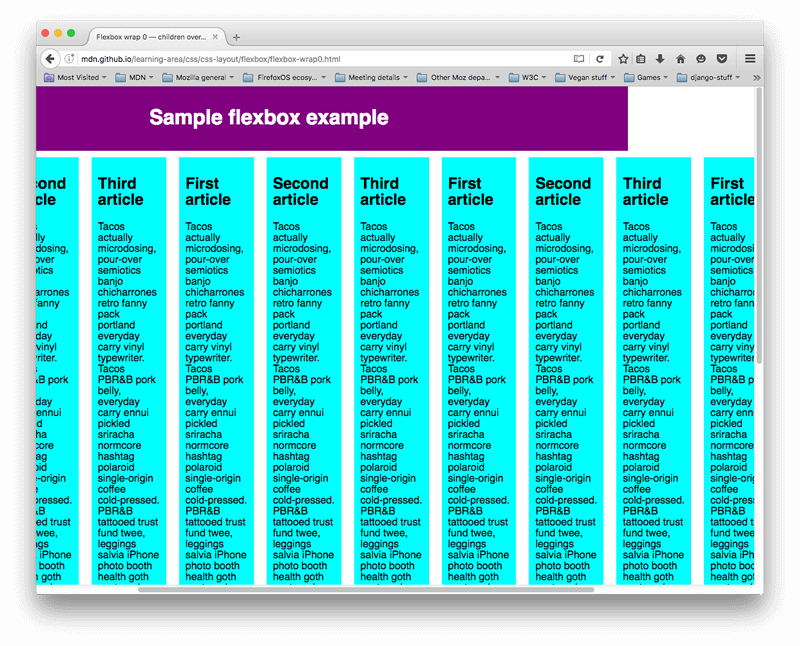
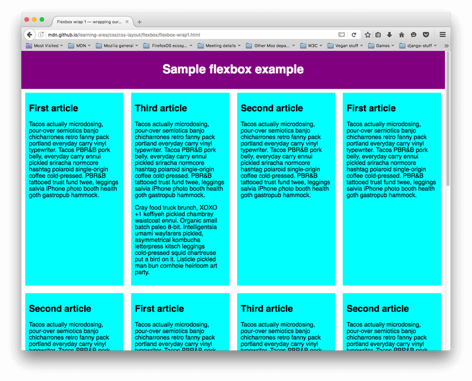

Flexbox is a one-dimensional layout method for laying out items in rows or columns. Items flex to fill additional space and shrink to fit into smaller spaces.
Why Flexbox?
For a long time, the only reliable cross browser-compatible tools available for creating CSS layouts were things like floats and positioning. These are fine, and they work, but in some ways they are also rather limiting and frustrating.
When elements are laid out as flex items, they are laid out along two axes:
- The main axis is the axis running in the direction the flex items are being laid out in (e.g. as rows across the page, or columns down the page.) The start and end of this axis are called the main start and main end.
- The cross axis is the axis running perpendicular to the direction the flex items are being laid out in. The start and end of this axis are called the cross start and cross end.
- The parent element that has display: flex set on it (the
section in our example) is called the flex container.
- The items being laid out as flexible boxes inside the flex container are called flex items (the
article elements in our example).
- The items being laid out as flexible boxes inside the flex container are called flex items (the
article elements in our example).
Flexbox provides a property called flex-direction that specifies what direction the main axis runs in (what direction the flexbox children are laid out in) — by default this is set to row, which causes them to be laid out in a row in the direction your browser's default language works in (left to right, in the case of an English browser).
Try adding the following declaration to your section rule:
You'll see that this puts the items back in a column layout, much like they were before we added any CSS. Before you move on, delete this declaration from your example.
flex-direction: column;
One issue that arises when you have a fixed amount of width or height in your layout is that eventually your flexbox children will overflow their container, breaking the layout. Have a look at our flexbox-wrap0.html example, and try viewing it live (take a local copy of this file now if you want to follow along with this example):

Here we see that the children are indeed breaking out of their container. One way in which you can fix this is to add the following declaration to your section rule:
flex-wrap: wrap;
Also, add the following declaration to your article rule:
flex: 200px;
Try this now; you'll see that the layout looks much better with this included:

We now have multiple rows — as many flexbox children are fitted onto each row as makes sense, and any overflow is moved down to the next line. The flex: 200px declaration set on the articles means that each will be at least 200px wide. We'll discuss this property in more detail later on. You might also notice that the last few children on the last row are each made wider so that the entire row is still filled.
But there's more we can do here. First of all, try changing your flex-direction property value to row-reverse — now you'll see that you still have your multiple row layout, but it starts from the opposite corner of the browser window and flows in reverse.
At this point it is worth noting that a shorthand exists for flex-direction and flex-wrap — flex-flow. So for example, you can replace
flex-direction: row;
flex-wrap: wrap;
with
flex-flow: row wrap;
All the Documentation come from MDN Web Docs
Thank you so much for all this precious documentation that you give us for free!